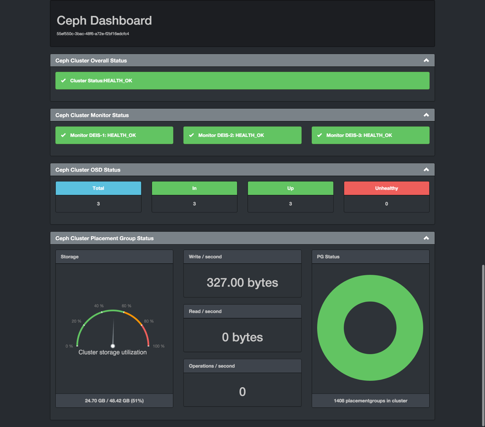

Ceph Management Platforms¶
Intro¶
Till now I’ve found 6 opensrc Ceph Mangement Platforms, I’ll pick up 3 of them to compare, in order to save our precious time. cause I think w/ these 3 management platform we can tell what do we want.
Management Paltforms: Calamari, ceph-dash, VSM, inkscope, krakendash, ceph-web (ranked by watch+star+fork numbers).
notice ceph-dash only support monitoring, added here for the comparisonof monitoring.
Calamari¶
https://github.com/ceph/calamari
https://github.com/ceph/calamari-clients
start by inktank
opensrc since May 2014
present as diagnostic tool
- exposing a high level REST API
- calamari provides a view of the entire system instead of access to RADOS within one cluster.
precompiled pkgs not available(in ubuntu vagrant)
- dashboard
- shows HEALTH(can show
health detail), OSD, MON, POOL & PG stats - IOPS(N/A), Usage(N/A) and HOSTs
- shows HEALTH(can show
- workbench shows PG & OSD stats, can sort by OSD or HOST
- graph shows
- default mgmt view can tag cluster stats
- OSDs grouped into diff HOSTs
- manage OSD
- scrubbing – scrub, deep scrub
- tagging OSDs – tag down/out
- manage pool
- change name
- change reps
- change PG number
- switch crush-rule
- del pool
- server side (backend)
- composed of: Apache, salt-master , supervisord , cthulhu , carbon-cache
- newer version provide a compelte new REST API(old based on Ceph REST API), abstract the ops of CEPH API, convient for people not know CEPH deeply.
- client side (frontend)
- Web UI primary in JS uses the Calamari REST API
- ceph nodes
- composed of – salt-minion , diamond
- diamond – collect monitoring datas, support over 90 kinds of info. report to graphite.
manage cluster using cthulhu and saltstack
monitoring using graphite and diamond
installation¶
- Requirements: ceph-deploy and it’s env
# add repo, install dependency and install calamari
# =================================================
echo "deb http://download.ceph.com/calamari/1.3.1/ubuntu/trusty/ trusty main" >> /etc/apt/source.list.d/ceph.list
sudo apt-get update && sudo apt-get install -y apache2 libapache2-mod-wsgi libcairo2 supervisor python-cairo libpq5 postgresql
sudo apt-get install calamari-* -y
sudo chmod a+w /var/log/calamari/cthulhu.log # can't access by default
# install ceph nodes
# ==================
sudo apt-get install python-dev python-pip git -y # prerequsite to install diamond
git clone -b calamari https://github.com/ceph/diamond/
sudo pip install diamond/
# initialize calamari and conn to ceph nodes
sudo calamari-ctl initialize
echo ``auto_accept: True`` >> /etc/salt/master # make sure salt master auto accept the conn request
ceph-deploy calamari connect <ceph nodes>
# kill all salts
kill `ps aux | grep salt | awk '{print $2}'` # kill all salt in a single server
$ sudo calamari-ctl initialize
[INFO] Loading configuration..
[INFO] Starting/enabling salt...
[INFO] Starting/enabling postgres...
[INFO] Updating database...
[INFO] Initializing web interface...
[INFO] Starting/enabling services...
[INFO] Updating already connected nodes.
[INFO] Restarting services...
[INFO] Complete.
$
- issues
errors can be shown in /var/log/calamari/calamari.log
query calamari issuses (some function not realized)– http://tracker.ceph.com/projects/calamari/issues
can’t open log/config file –
sudo chmod 777 /var/log/calamari/ -RMaster hostname: salt not found – debug w/
salt-minion -l debugCluster Updates Are Stale. The Cluster isn’t updating Calamari. Please contact Administrator – solution can’t access from redhat website!
- diamond can’t start – default conf call the path of diamond
/usr/bin/diamond, real path is/usr/local/bin/diamond, create a link file to solve this issue mkdir /usr/share/diamond/collectors/ -pmkdir /var/log/calamari/scp /etc/diamond/* root@192.168.56.111:/etc/diamondscp /usr/share/diamond/* root@192.168.56.111:/usr/share/diamondln -sf /usr/local/bin/diamond /usr/bin/diamondnohup /usr/bin/python /usr/local/bin/diamond --foreground --skip-change-user --skip-fork --skip-pidfile &
- diamond can’t start – default conf call the path of diamond
- diamond not report –
/var/lib/graphite/indexin thisfile we can tell all observation entries netstat -tunpla | grep `ps aux | grep diamond | awk '{print $2}' | head -n1`– all nodes connected
- diamond not report –
salt.loaded.int.module.cmdmod
dump whisper data –
/opt/calamari/venv/bin/whisper-dump.py /var/lib/graphite/whisper/servers/ceph-osd2/diskspace/root/byte_used.wsp | less
Virtual Storage Manager¶
https://github.com/01org/virtual-storage-manager
- Intel VSM v0.5.1 [1]
- WebUI for cluster management, monitoring and troubleshooting
- Server management – Organize servers and disks
- Cluster management – Manages cluster/pool creation
- OpenStack interface – conn pools to OpenStack
- VSM administration – User/Passwd


- VSM Controller – conn to Agents and NovaCtrl
- WebUI, REST API
- mariadb, rabbitmq
VSM Agent – runs on every ceph node, pass conf&stats info to controller

- nothing special
- mgmt network
- ceph pub network
- ceph cluster network

- VSM concepts
- Storage Class – Drivers w/ similar performance characteristics
- Storage Group – Drivers w/ same Storage Class grouped together

- Servers can grouped into failure domains(call Zone in VSM)

- Monitoring
- using ceph client
ceph -sceph pg dump osdsceph pg dump pgs_briefceph osd pool statsceph osd dumpceph osd treeceph mds dumprbd ls -l {pool name}
- status: StorageGroup, RBD, OSD, MON, PG, MDS, Capacity, IOPS, throughput, ERR, WRN
- detect OSDs not running, near full or full
- identifying ntp latency err
- Managing
- create pools,add/rm/stop/start OSDs, add/rm MON
- stop w/o rebalancing
ssh2nova_ctrl, expose pools to OpenStack
vsm account mgt
Installation¶
- requirements
- OS: Ubuntu Server 14.04.2/CentOS 7 Server Basic (master only support centos)
- Ceph: Firefly/Giant/Hammer/Infernalis (only hammer available)
- OpenStack: Havana/Icehouse/Juno/Kilo/Liberty
- at least 3 storage nodes
- passwd-less ssh
- will sync
/etc/hostson each nodes
- note
- will disable selinux
ceph-nodes
sudo mkdir /loop
for i in {0..5}; do
sudo truncate -s 5G /loop/loop$i.img
sudo losetup /dev/loop$i /loop/loop$i.img
sudo parted /dev/loop$i -- mklabel gpt
sudo parted -a optimal /dev/loop$i -- mkpart primary 1MB 100%
done
git clone -b http://github.com/01org/vsm-dependencies
cp vsm-dependencies/ubuntu/* vsm-dep-repo/
./install.sh -v 2.0 -u vsm
- vsm-ctrl-node
git clone -b 2.0 http://github.com/01org/virtual-storage-manager
cd virtual-storage-manager
./buildvsm.sh
cd release
tar -xvzf 2.0.0-216.tar.gz
cd 2.0.0-216 # enter the vsm package
mkdir manifest/192.168.56.12{0..3}
cp manifest/{cluster.manifest.sample,192.168.56.120/cluster.manifest} # then edit it
cp manifest/{server.manifest.sample,192.168.56.121/server.manifest} # then edit it
cp manifest/192.168.56.12{1,2}/server.manifest
cp manifest/192.168.56.12{1,3}/server.manifest
./install.sh -u vsm -v 2.0 # vsm is the username of ceph-nodes
./get_pass.sh # generate admin password, username *admin*
cat /etc/vsmdeploy/deployrc | grep -i admin_password | cut -d'=' -f2
- issues
install.sh -k <path/to/key/file>– can’t find keyfile, hundreds of input manually!should enable port 80 manually
- osd can’t startup
- can’t start osd w/ directory or loopback device.
ERROR: error creating empty object store in /data11/osd.11: (21) Is a directoryERROR: unable to open OSD superblock on /data11/osd.11: (2) No such file or directoryERROR: osd init failed: (22) Invalid argument
$ ./install.sh -u vsm -v 2.0
The following information may help to resolve the situation:
The following packages have unmet dependencies:
ceph : Depends: ceph-common (>= 0.78-500) but it is not going to be installed
librbd-dev : Depends: librados-dev but it is not going to be installed
Depends: librbd1 (= 0.80.11-0ubuntu1.14.04.1) but 0.94.1-1trusty is to be installed
librbd1-dbg : Depends: librbd1 (= 0.80.11-0ubuntu1.14.04.1) but 0.94.1-1trusty is to be installed
E: Unable to correct problems, you have held broken packages.
Solution
wget -q -O- 'https://download.ceph.com/keys/release.asc' | sudo apt-key add -
echo deb http://download.ceph.com/debian-{hammer}/ $(lsb_release -sc) main | sudo tee /etc/apt/sources.list.d/ceph.list
Inkscope¶
https://github.com/inkscope/inkscope
- Ceph visualiztion and operation through CLI [2]
- Open Source
- Use Ceph RESTful API
- Modularity and simplicity
- inkscopeViz
- Web client
- inkscopeCtrl
- Server part
- Provides an advanced REST API
- inkscopeProbe
- Collects system and ceph infos
- Feeds a mongoDB database
- inkscopeMonitor (not developed)
- Monitoring of Ceph metrics stored in db
- Feeds monitoring tools like Nagios
Ceph-dash¶
Comparison¶
| Item | Calamari | ceph-dash | VSM | inkscope |
|---|---|---|---|---|
| hotness | 66,175,116 | 36,128,46 | 50,82,57 | 38,82,36 |
| license | LGPL2.1 | MIT- | Apache v2 | Apache v2 |
| language | python/JS | python/JS | python | python |
| web_engine | Apache/django | Apache | Apache/django | Apache/flask |
| js_lib | AngularJS | AngularJS | ||
| css | bootstrap | bootstrap | ||
| DB | postgreSQL | InfluxDB | MySQL | mongoDB |
| Backing | RedHat | Chri./Eich. | Intel | Orange Labs |
| Capabilities | Mon & LConf | Mon | Mon & Conf | Mon & LConf |
| Compatability | wide | wide | limited | wide |
| Item | Calamari | ceph-dash | VSM | inkscope |
|---|---|---|---|---|
| MON Stats | Y | Y | Y | Y |
| OSD Stats | Y | Y | Y | Y |
| MDS Stats | N | N | Y | Y |
| PG Stats | Y | Y | Y | Y |
| Host Stats | Y | Y | Y | Y |
| OSD-host-M | Y | Y | Y | Y |
| PG-OSD-M | N | N | N | Y |
| Capacity | Y | Y | via Groups | Y |
| Throughput | N | Y | Y | Y |
| IOPS | Y | Y | Y | Y |
| ERR/WRN | Y | Y | Y | Y |
| view logs | Y | N | N | N |
| send email | N | w/ nagios | N | N |
| charts/G | Y | w/ nagios | N | N |
| Item | Calamari | VSM | inkscope |
|---|---|---|---|
| Deploy Cluster | N | Y | N |
| Deploy Hosts | N | Y | N |
|
N | Y | N |
| set Daemons | OSD only | Y | N |
| set ops flags | Y | N | Y |
| set parametrs | Y | N | view |
| set crush | N | partial | view |
| set EC | N | Y | Y |
| OSD | partial | Y | Y |
| Pools(Rep) | limited | Y | Y |
| Pools(EC&Teir) | N | Y | partial |
| RBDs | N | partial | N |
| S3/Swift/... | N | N | Y |
| link to Nova | N | Y | N |
- Notice
- hotness include watch,star,fork of 2016/3/9
- krakendash has modified the MIT license
- these comp infos derived from internet, not up to date.
References¶
| [1] | https://01.org/virtual-storage-manager/documentation/vsm-0.5.1-training-slides |
| [2] | http://www.slideshare.net/alaindechorgnat/inkscope-ceph-day-paris-final?qid=24a1a418-b01c-4f91-b718-f26cffe920b7&v=&b=&from_search=1 |
| [3] | http://www.slideshare.net/DaystromTech/ceph-days-sf2015-paul-evans-static?qid=4398eec4-e73a-4483-8e47-61f9875872d3&v=&b=&from_search=2 |
| [4] | http://calamari.readthedocs.org/en/latest/operations/index.html |
| [5] | http://ceph.com/category/calamari/ |
| [6] | http://ceph.com/planet/ceph-calamari-the-survival-guide/ |
| [7] | http://www.openstack.cn/?p=2708 |